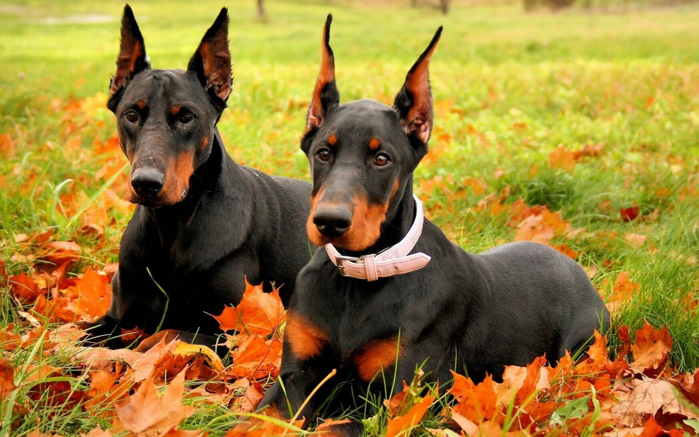

დობერმანი (აგრეთვე ცნობილი როგორც დობერმან პინჩერი) — დაბალბეწვიანი ჯიშის ძაღლი. გამოიყვანეს გერმანიაში, თიურინგიაში ქალაქ აპოლდაში, XIX საუკუნის ბოლოს, ფრიდრიხ ლუის დობერმანის მიერ, რომლის პატივისცემის მიზნითაც ახალგამოყვანილი ჯიშის ძაღლს ეწოდა დობერმანი. სიცოცხლის ხანგრძლივობა - 14 წლამდე. აღწერა დობერმანი საშუალო და საშუალოზე მაღალი ზომის ჯიშია. ზრდასრული მამრის სიმაღლეა 68-72 სმ, მდედრისა — 63-68 სმ. დობერმანი მსოფლიოში დიდი პოპულარობით სარგებლობს. მას მოკლე, ხშირი, მბზინავი ბალანი აქვს. დობერმანი კარგი მოდარაჯე ძაღლია, გამოირჩევა საოცარი მეგობრულობით და სიმშვიდით.
